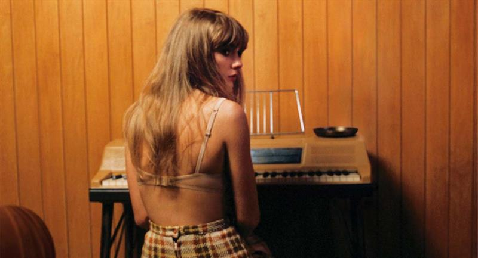
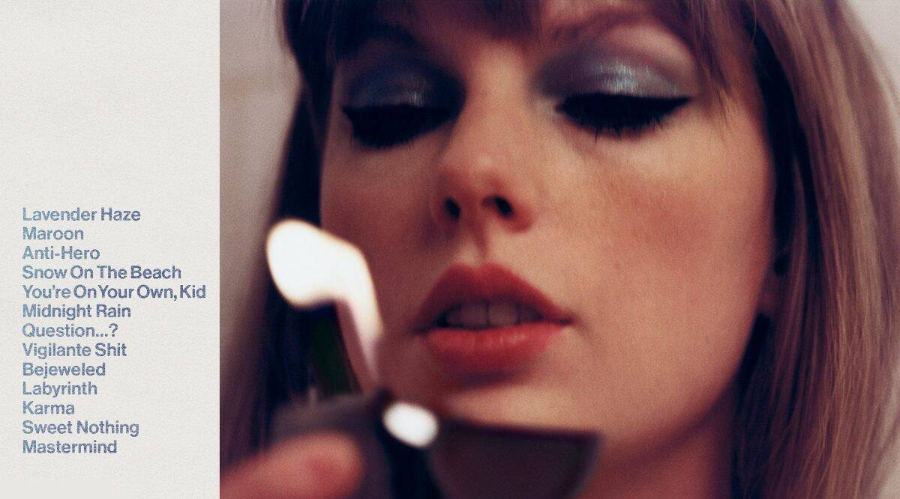
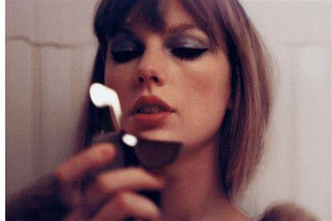

Este jueves 21 de octubre la cantautora y actriz, Taylor Swift lanzó en plataformas su décimo álbum de estudio llamado Midnights.
El nuevo material de Taylor Swift cuenta con 13 temas compuestos por ella misma, entre los que se incluye una colaboración con Lana del Rey.
Midnights relata la historia de 13 noches sin dormir en las que Taylor Swift pensaba el odio que puede sentir hacia ella misma y en si sus decisiones han sido correctas, además de las oportunidades que ha dejado pasar.
